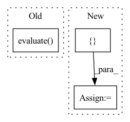

Pattern ID :23450

Before Change
input_ids, attention_mask, segment_ids, valid_masks, label_ids, label_masks = batch
prediction, valid_len = self.predict(batch)
metrics.evaluate(prediction, label_ids, valid_len)
After Change
pred_result.cpu().numpy(),
average="macro")
table = pt.PrettyTable(["{}".format("Evaluation"), "F1", "Precision", "Recall"])
table.add_row(["Label"] + ["{:3.4f}".format(x) for x in [f1, p, r]])
print(table)
In pattern: SUPERPATTERN
Frequency: 3
Non-data size: 3
Instances
Fragment ID: 73581315
Project Name: jinzhuoran/cogie
Commit Name: a3df407e630e8b4bbcc3388fd34d0361d70fbdc9
Time: 2022-04-07
Author: 1208314139@qq.com
File Name: cogie/models/ner/w2ner.py
M Class Name: W2NER
N Class Name: W2NER
M Method Name: evaluate(2)
N Method Name: evaluate(3)
M Parent Class: nn.Module
N Parent Class: nn.Module
M File Name: cogie/models/ner/w2ner.py
N File Name: cogie/models/ner/w2ner.py
M Start Line: 271
M End Line: 286
N Start Line: 272
N End Line: 297
'>
Before Change
pred_df = pred_df.withColumn("label_pred", argmax(pred_df.label_prob))
evaluator = MulticlassClassificationEvaluator(predictionCol="label_pred", labelCol="label", metricName="accuracy")
accuracy = evaluator.evaluate(pred_df)
print("Test accuracy:", accuracy)
with mlflow.start_run():
mlflow.log_metric("learning_rate", learning_rate)
After Change
model = train(learning_rate)
// Write checkpoint
meta = {
"custom_objects": model.getCustomObjects(),
"floatx": model._get_floatx(),
"metadata": model._get_metadata(),
}
save_checkpoint(checkpoint_dir, model.getModel(), None, learning_rate, meta)
test_loss = test_model(model)
'>
Fragment ID: 73581329
Project Name: oap-project/cloudtik
Commit Name: 1d4628d27213dc5dfa75fffa8ba02ec2be572e67
Time: 2022-12-06
Author: haifeng.chen@intel.com
File Name: example/ml/jobs/spark-mlflow-hyperopt-horovod-tensorflow.py
M Class Name: AnonimousClass
N Class Name: AnonimousClass
M Method Name: hyper_objective(1)
N Method Name: hyper_objective(1)
M Parent Class:
N Parent Class:
M File Name: example/ml/jobs/spark-mlflow-hyperopt-horovod-tensorflow.py
N File Name: example/ml/jobs/spark-mlflow-hyperopt-horovod-tensorflow.py
M Start Line: 183
M End Line: 195
N Start Line: 284
N End Line: 299
'>
Before Change
argmax = udf(lambda v: float(np.argmax(v)), returnType=T.DoubleType())
pred_df = pred_df.withColumn("label_pred", argmax(pred_df.label_prob))
evaluator = MulticlassClassificationEvaluator(predictionCol="label_pred", labelCol="label", metricName="accuracy")
accuracy = evaluator.evaluate(pred_df)
print("Test accuracy:", accuracy)
with mlflow.start_run():
mlflow.log_metric("learning_rate", learning_rate)
After Change
model = train(learning_rate)
// Write checkpoint
meta = {
"input_shapes": model.getInputShapes(),
"metadata": model._get_metadata(),
}
save_checkpoint(checkpoint_dir, model.getModel(), None, learning_rate, meta)
test_loss = test_model(model)
mlflow.log_metric("learning_rate", learning_rate)
'>
Fragment ID: 73581326
Project Name: oap-project/cloudtik
Commit Name: cf76222205e7c6ad94a12bddf54446f8c2ed5c77
Time: 2022-12-06
Author: haifeng.chen@intel.com
File Name: example/ml/jobs/spark-mlflow-hyperopt-horovod-pytorch-mnist.py
M Class Name: AnonimousClass
N Class Name: AnonimousClass
M Method Name: hyper_objective(1)
N Method Name: hyper_objective(1)
M Parent Class:
N Parent Class:
M File Name: example/ml/jobs/spark-mlflow-hyperopt-horovod-pytorch-mnist.py
N File Name: example/ml/jobs/spark-mlflow-hyperopt-horovod-pytorch-mnist.py
M Start Line: 186
M End Line: 197
N Start Line: 252
N End Line: 265